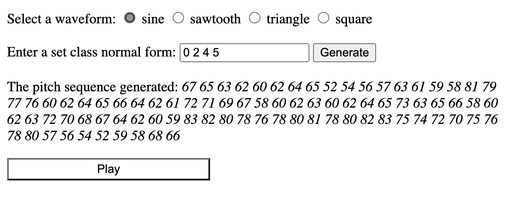
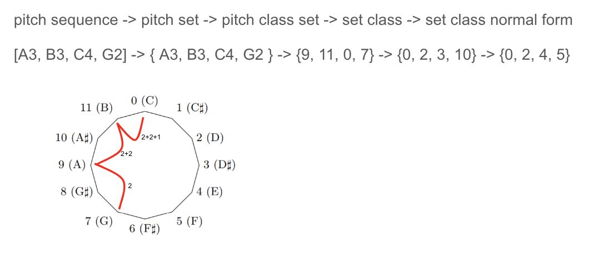
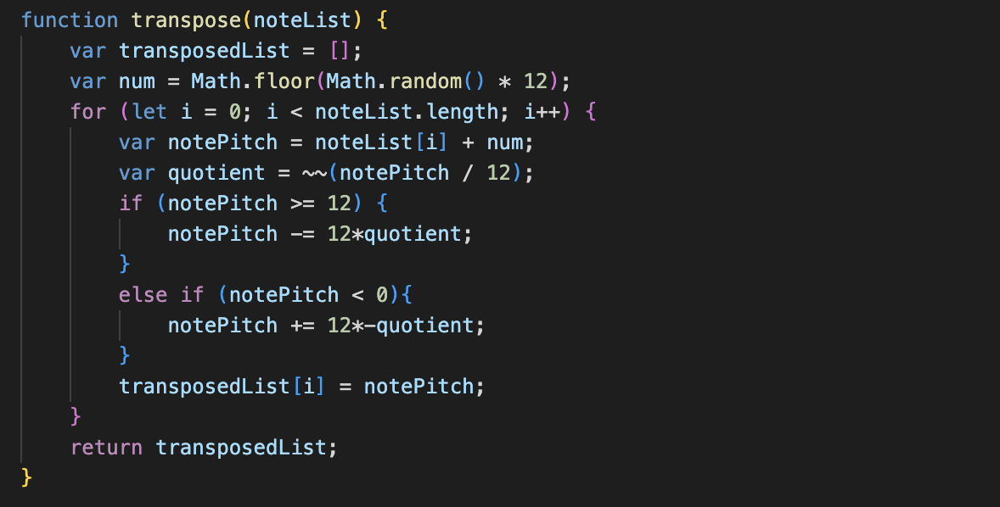
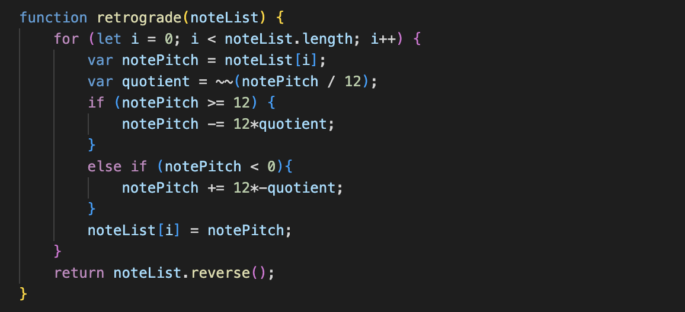
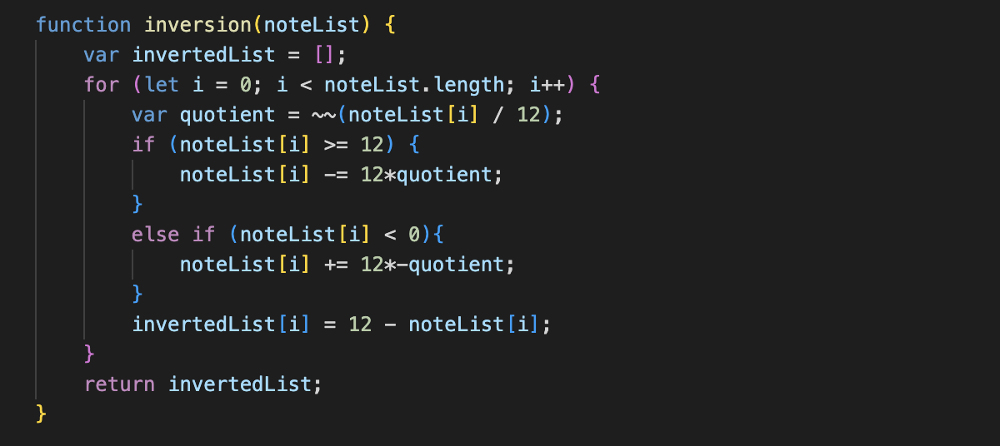
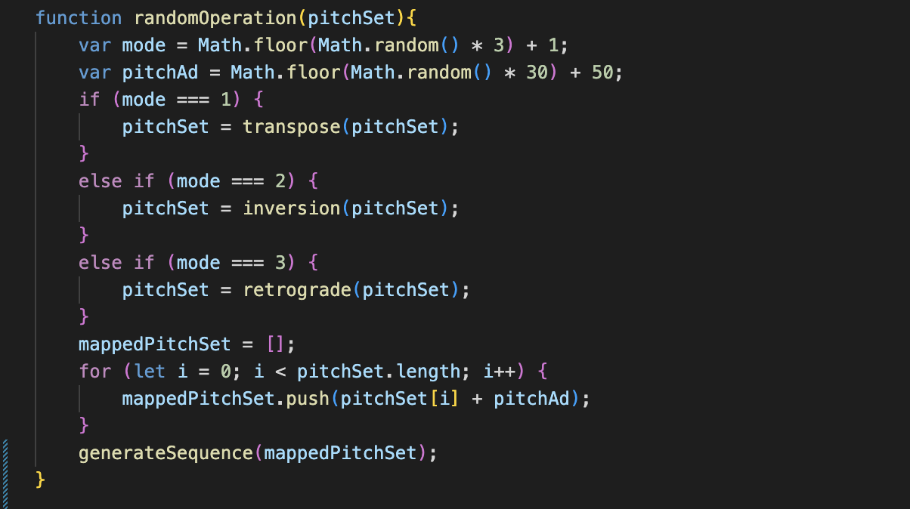
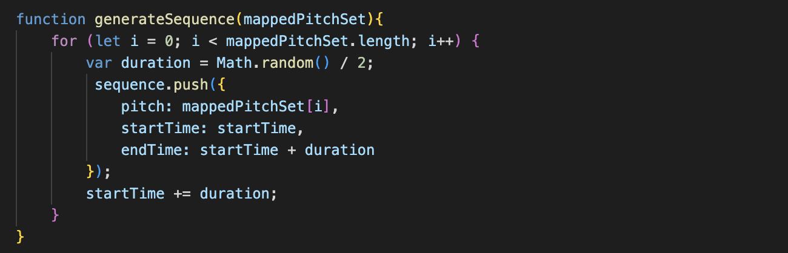
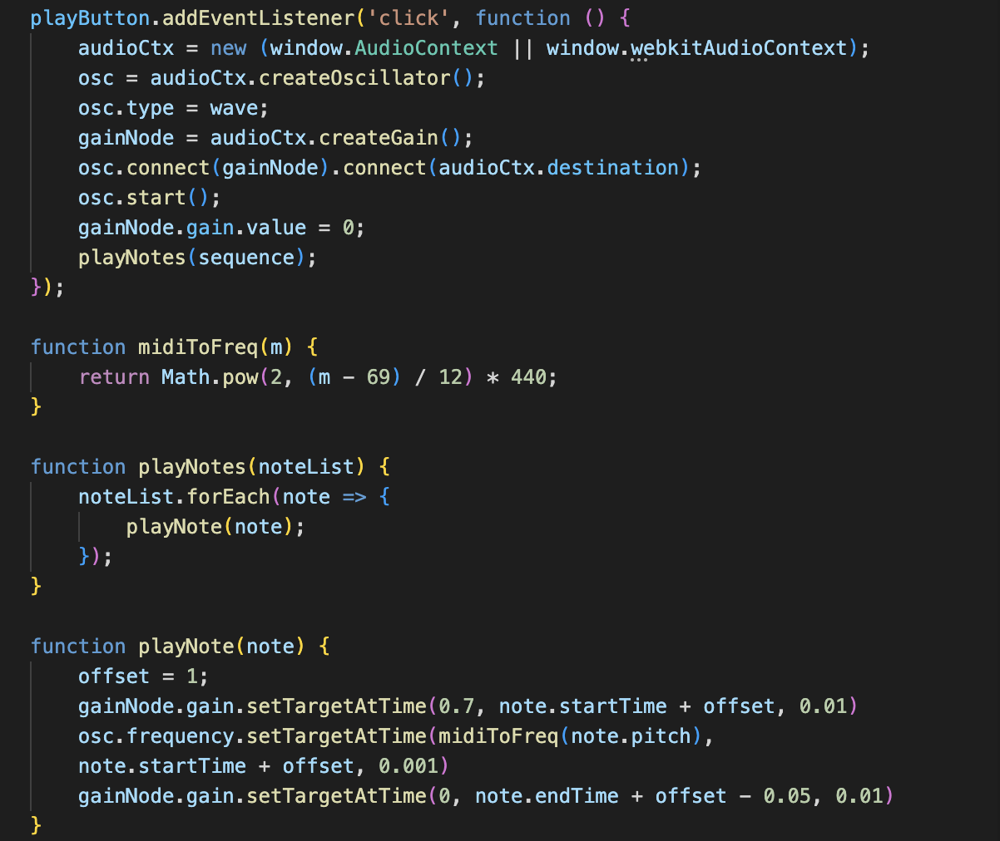
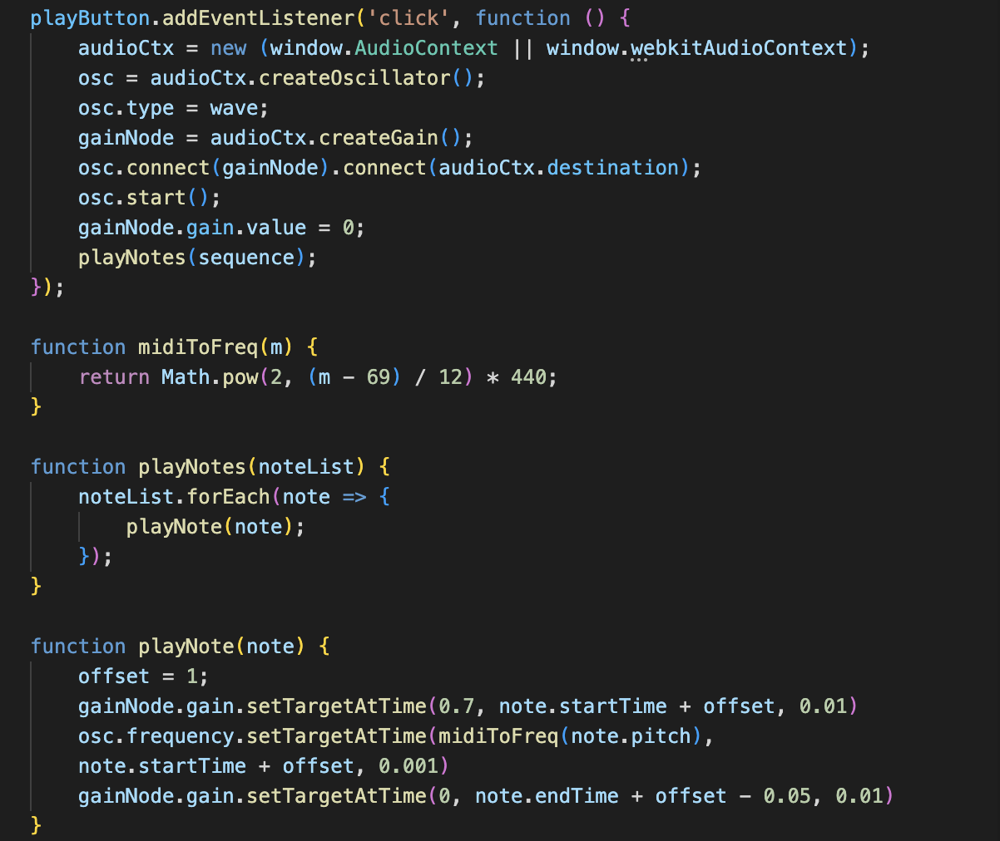

The user enters in a series of numbers separated by space, and this software generates a sequence of notes. When click the “Play” button, the user would hear the melody. The key is how pitch set theory enables the input perform different operation.
Start by introducing three operations: transpose, retrograde, inversion.
Assume the inputted pitch set is {0, 2, 4, 5}, the transposition operation allows it perform rotations. For instance, if it’s a rotation of 3 steps, then the pitch set would be [3, 5, 7, 8]. In transpose(), I set a variable “num” as the number of steps to rotate. Then in the for loop, each note is incremented by “num” to finish its transposition.
The retrograde function just simply reverses the pitch set, from {0, 2, 4, 5} to [5, 4, 2, 0] as an example.
The inversion function flips the pitch set, from {0, 2, 4, 5} to [0, 10, 8, 7]. Mathematically, the flip operation is achieved by 12 - value. In case if the user inputs a value larger than 12 or smaller than 0, I have to make sure each inputted value is rescaled to a value between 0 and 12. Therefore, I’m using the quotient by value/12.
In randomOperation function, I set a variable “mode” that gives a random number among 1, 2, and 3 and let it decide which operation the pitch set is going to perform. Once it’s done, the set in normal form is mapped onto a set of pitches. Using the flipped set [0, 10, 8, 7], it’s mapped onto [60, 70, 68, 67] through the for loop here.
In generateSequence, the pitch set is turned in to a sequence with pitch, start time, and end time so that it’s ready to play. I don’t want the duration of each note to be the same - that sounds boring, so let the variable "duration" decide a random value between 0 and 0.5 to be the duration
When click the “Generate” button, the variable “numOp” decides how many times to operate the input. Each time the input is operated and mapped in randomOperation(), and finally combined into a sequence. To make the sequence play, the software plays an oscillator with the waveform selected by the user. Each note is enveloped by playNote() function and converted from pitch to frequency by midiToFreq() function.
 
